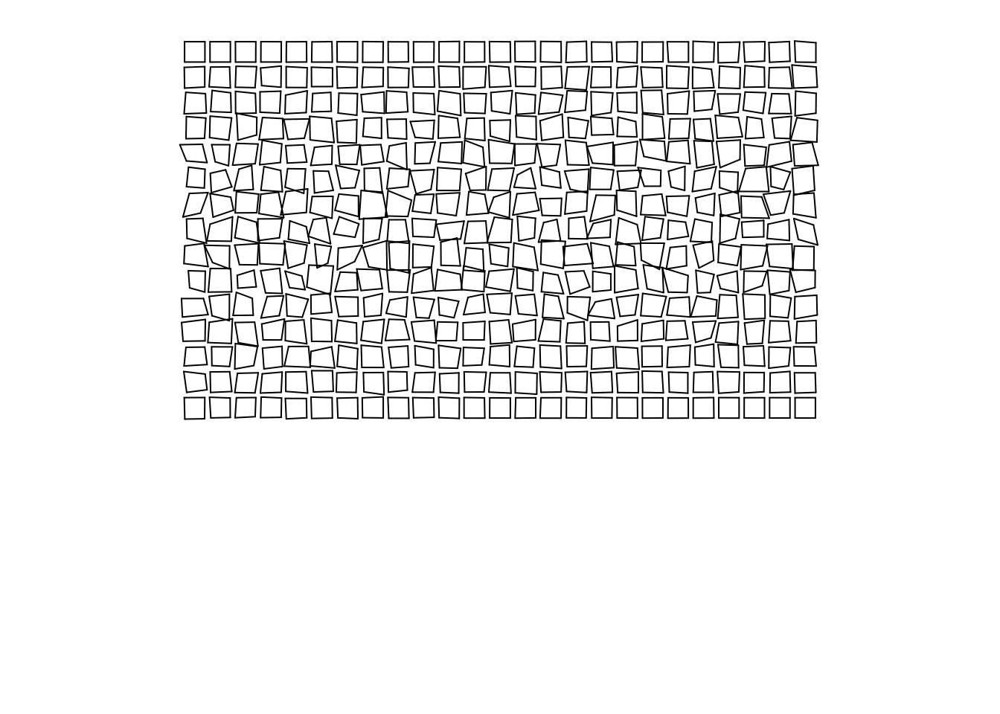

“深刻认识和体会教育对个体发展与社会进步的深远意义是我选择教育学术研究的动因，也是我职业奋斗目标：通过学术研究促进教育事业的发展，让教育成为每个人获得幸福的通路，成为社会进步的基石。”
叶阳永
中国人民大学教育学院副教授，兼职律师。美国密苏里大学哥伦比亚校区博士，北京师范大学教育学硕士，中国农业大学农学学士。使用法学、政治学、财政学的学科视角研究教育现象与教育问题，关注中小学教师人事制度改革、教师职业市场、基础教育财政改革、职业教育与技能市场等主题。同时致力于将数据科学的理论与技术运用到教育研究当中。